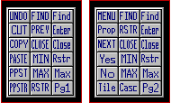

| My-T-Soft®: for Windows; Indestructible Keyboards and Indispensable Utilities; Version 1.80; User's Guide | ||
|---|---|---|
| Prev | Chapter 3. My-T-Soft Panels | Next |

Click on each button to perform the action described. The keystroke equivalent is shown in the [brackets]. Page 1 - Windows Controls Desktop Panel
MENU Opens the control (system) menu of the active window. [Alt][Space]
Prop Properties / Opens the Context Menu (if available) [Shift][F10]
NEXT Go to next window and restore window size. [Alt][Tab]
Yes Yes answer. [Alt][Y]
No No answer. [Alt][N]
Tile Tile the windows/icons. [Shift][F4]
FIND Switches through all open windows. [Alt][Esc]
RSTR Restore the window to its former size. [Alt][Space][R]
CLOSE Close the active window. [Alt][F4]
MIN Minimize the active window (to an icon). [Alt][Space][N]
MAX Maximize the active window (full screen). [Alt][Space][X]
Casc Cascade the windows/icons. [Shift][F5]
Find Find the next child window. [Ctrl][Tab]
Enter Enter Key. [ENTER]
Close Close the active child window of an active window. [Ctrl][F4]
Rstr Restore the child window to its former size. [Alt][Space][R]
Max Maximize the child window. [Alt][Space][X]
Pg2 Move to Page 2 of the Windows Controls.
Page 2 - Windows Controls Application Panel
UNDO Undo last command. [Alt-BkSp]
CUT Cut highlighted object to clipboard. [Shft-Del][Ctrl-X]
COPY Copies highlighted object to clipboard. [Ctrl-Ins][Ctrl-C]
PASTE Pastes object from clipboard to active window. [Shft-Ins][Ctrl-V]
PPST Pastes object from clipboard to previous window.
PPSTR Pastes object from clipboard to previous window and returns.
FIND Switches through all open windows. [Alt-Esc]
PREV Goes to previous active window (if available).
CLOSE closes active window. [Alt-F4]
MIN minimizes active window (to an icon). [Alt][Space][N]
MAX maximizes active window (full screen). [Alt][Space][X]
RSTR Restore the window to its former size. [Alt][Space][R]
Find find the next child window. [Ctrl-Tab]
Enter Enter Key. [Enter]
Close Close the active child window of an active window. [Ctrl][F4]
Rstr Restore the child window to its former size. [Alt][Space][R]
Max maximize the child window. [Alt][Space][X]
Pg1 return to page 1.
In order to use the PPST and PPSTR functions, you must do the following:
These functions work best when you have two windows on your desktop.
Use the FIND button to select the second window.
Verify that both windows are in sequence by using the PREV key.
If both windows switch back and forth, then this feature is available.
Highlight some text in Window1 and press COPY or CUT.
Use PPST to paste to Window2.
Use PPSTR to past to Window2 and return to Window1.
This feature will continue to be available, until either Window is closed or another window receives the input focus.